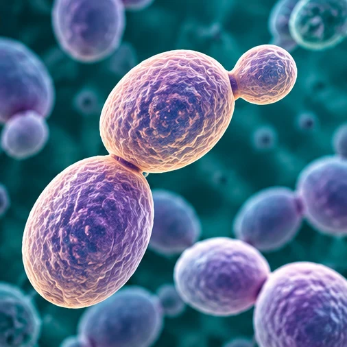

Unicelulares
Levaduras
Son hongos formados principalmente por células individuales, generalmente esféricas u ovaladas. Muchas se reproducen mediante gemación: aparece una pequeña yema en la célula madre que crece y puede separarse.
Si las células hijas permanecen unidas pueden formar cadenas llamadas seudohifas. En medios sólidos suelen generar colonias cremosas; la identificación de especies puede requerir pruebas fisiológicas.